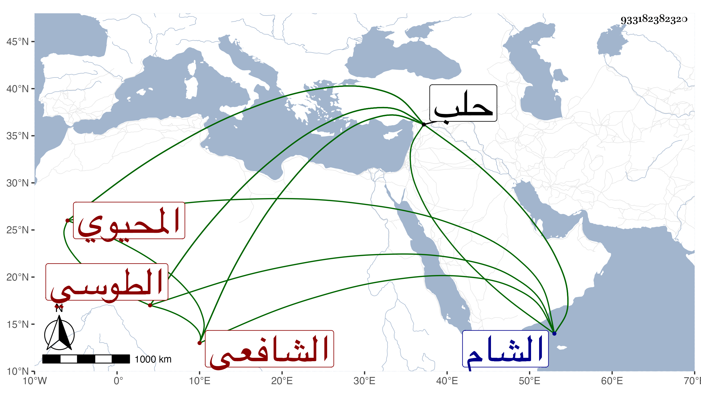

0902Sakhawi.DawLamic.ITO20230111-ara1.EIS1600.933182382320
Biography ID: 933182382320
748
محمد بن محمد بن محمد بن محمد بن محمد بن محمد بن محمد بن الامام حجة الاسلام أبي حامد محمد بن محمد بن محمد المحيوي أبو حامد الطوسي الغزالي الشافعي . قدم من بلاده الى حلب في رمضان سنة ثلاثين بعد دخوله الشام قديما وسمع فيها من ابن أميلة وحدث عنه الآن بحلب ، ووصفه حافظها البرهان والعلاء بن خطيب الناصرية بالعلم والدين وأنه قال لهما ان جده الثامن هو الغزالي زاد ثانيهما رأيت أتباعه وتلامذته يذكرون عنه علما كثيرا وزهدا وورعا وأنه معظم في بلاده من بيت علم ودين وأخبر بعض الطلبة عنه أنه حج مرارا منها مرة ماشيا على قدم التجريد قال وبلغني أنه رأى ملك الموت فسأله متى يموت فقال له في العشر فلم يدر أي عشر فاتفق أنه مات في العشر الأخير من رمضان يوم السبت ثاني عشريه سنة ثلاثين المذكورة بحلب وكانت جنازته مشهودة وذكره شيخنا في إنبائه وقال أخذ عنه ابراهيم بن علي الزمزمي المكي يعني التصريف كما تقدم في ترجمته .
